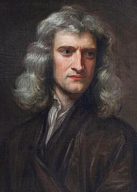

|
Английский физик, математик, механик и астроном,
один из создателей классической физики и математического анализа. Автор фундаментального труда «Математические начала натуральной философии», в котором он обнародовал законы движения и закон всемирного тяготения, сформировавшие господствующую научную точку зрения вплоть до появления общей теории относительности. Ньютон использовал свое математическое описание гравитации для строгого вывода эмпирических кеплеровских законов движения планет, а также для построения научной теории приливов, прецессии равноденствий и других явлений. Труд Ньютона устранил всякие сомнения в гелиоцентричности Солнечной системы и продемонстрировал, что движение объектов на Земле и небесных тел можно объяснить одними и теми же физическими принципами. Вывод Ньютона о том, что Земля представляет собой сплюснутый сфероид, впоследствии был подтвержден геодезическими измерениями Мопертюи, ла Кондамина и других, убедивших большинство европейских ученых в превосходстве ньютоновской механики над более ранними системами. Ньютон построил первый практический телескоп-рефлектор и разработал теорию цвета, основанную на наблюдении, что призма разделяет белый свет на цвета видимого спектра, тем самым заложив основы современной физической оптики. Его работы о свете были собраны в его книге «Оптика», опубликованной в 1704 году. В математике Ньютон разработал дифференциальное и интегральное исчисления, мощный вычислительный метод нахождения корней функций, классифицировал большинство кубических алгебраических кривых, продвинул теорию степенных рядов, обобщил биномиальную теорему на нецелые показатели. Последние три десятилетия своей жизни в Лондоне, служа смотрителем (1696—1699) и затем управляющим (1699—1727) Королевского монетного двора, Ньютон существенно улучшил монетную систему Англии. Был избран президентом Королевского общества (1703—1727) |
 |